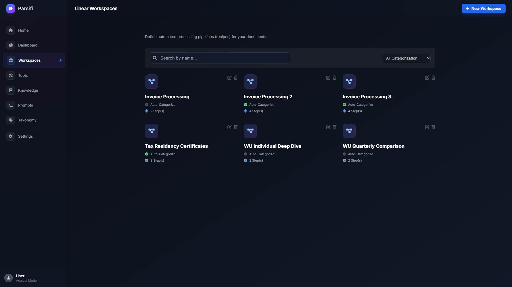
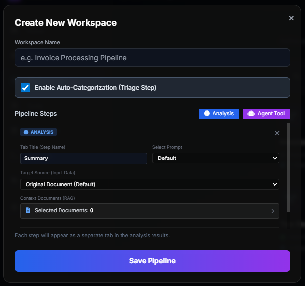

Pipelines & Workspaces
Workspaces allow you to chain multiple automated steps together, passing the output of one step into the input of the next to create complex workflows.

Chaining Prompts and Tools

Instead of running a single prompt or a single tool, a Workspace is built out of sequential Steps. You build these in the Workspace editor.
- Auto-Categorize Step: Instantly tags the document using Taxonomy keywords.
- Analysis Step: Runs an LLM prompt against the document text.
- Agent Tool Step: Executes a Custom Tool, taking the results and mapping them to an Excel Template.
You can drag and drop these steps into any order. When you select a Workspace during a document upload (or from the Dashboard), Parsifi will execute every step automatically.
Referencing Previous Steps
The true power of pipelines relies on the chaining tags.
If Step 1 is named "Summarize" (which extracts the `total_amount`), Step 2 does not need to read the entire document again to find that number. Instead, Step 2 can inject the result from Step 1 directly into its prompt using the following syntax:
Previous Output: {{Summarize.output.total_amount}}
Based on this total amount, calculate the quarterly burn rate.{{StepName.output.key}}. Ensure your step name contains no illegal characters if you plan
to reference it.
Custom Variables
Workspaces support global custom variables. When you create a Workspace, you can define variables like
{{target_company}}.
When you run the Workspace on the Dashboard, a modal will pop up asking for the value of
target_company. Parsifi will then inject this manual value into every prompt and every step
within the pipeline, allowing you to use a single workspace pipeline for dynamic, on-demand queries.